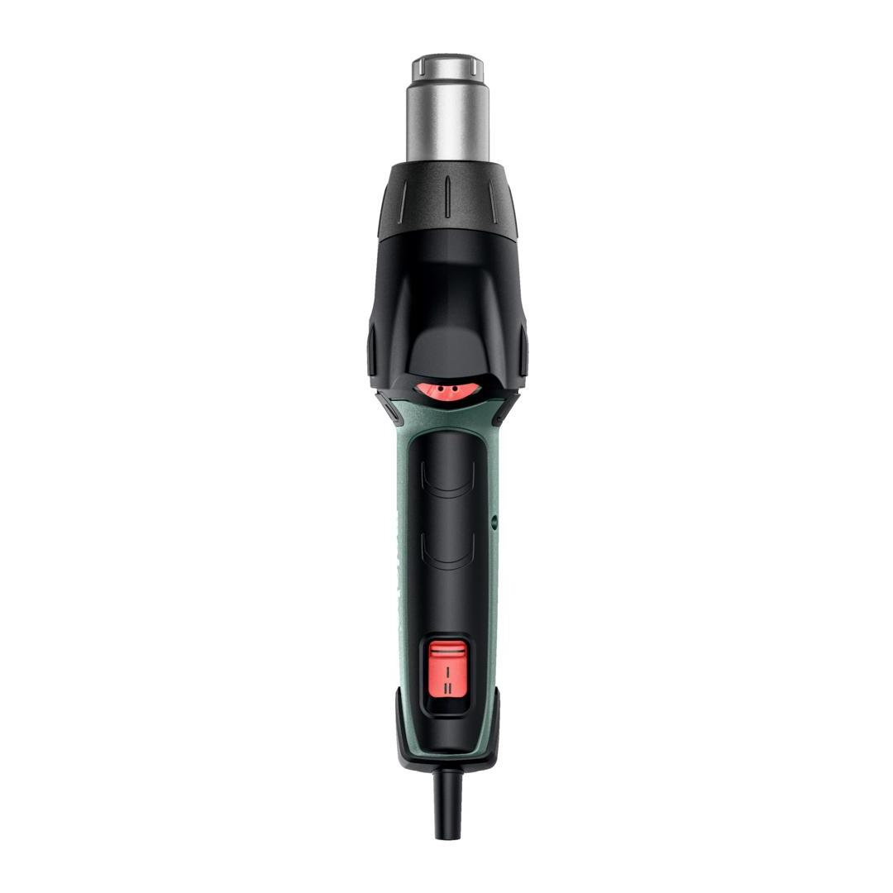
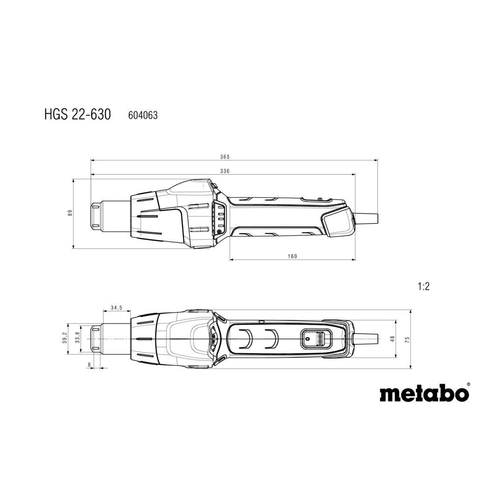
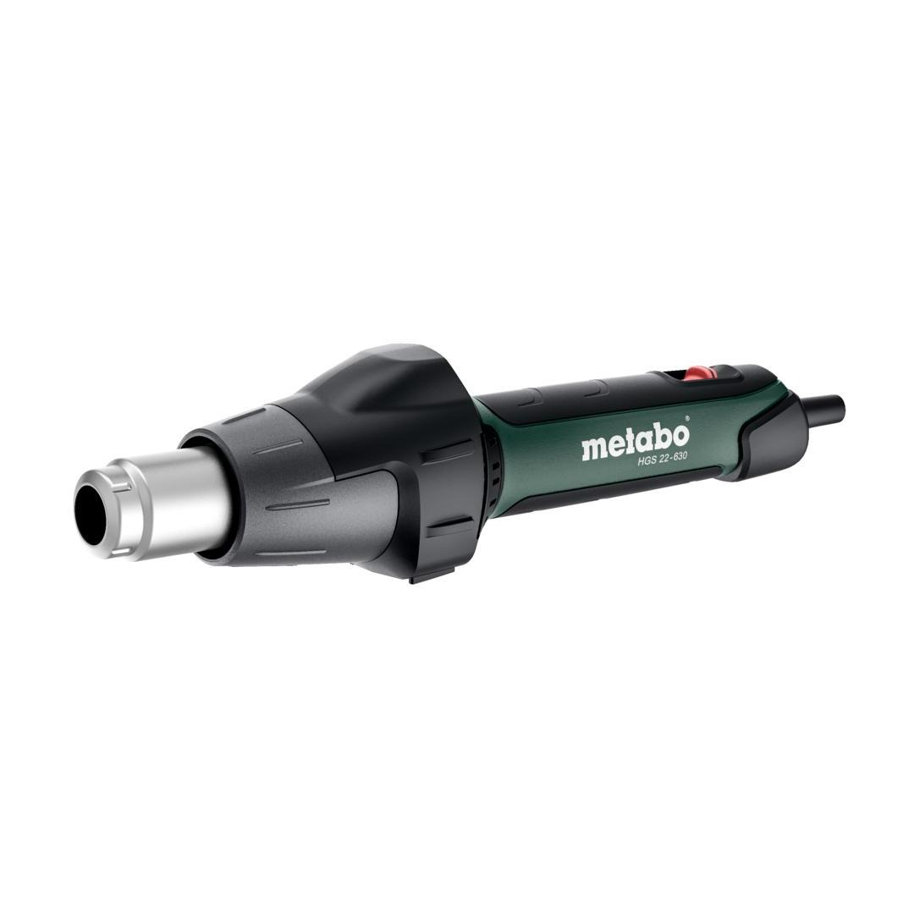

604063500



| Air volume min./max. | 150 / 500 l/min // 5 / 18 cfm |
| Input power max. | 2200 W |
| Weight (without power cable) | 0.65 kg / 23 oz |
| Air temperature | 80 - 630 °C // 176 - 1166 °F |
| Number of air temperature levels | infinitely variable |
| Air volume min./max. | 150 / 500 l/min // 5 / 18 cfm |
| Number of air volume levels | 2 |
| Input power max. | 2200 W |
| Weight (without power cable) | 0.65 kg / 23 oz |
| Cable length | 3 m / 10 ft |
| Vibration | 0.2 m/s² |
| Uncertainty of measurement K | 1.5 m/s² |
| Welding Nozzle |
| Reducing nozzle (9 mm) |
| metaBOX 145 |